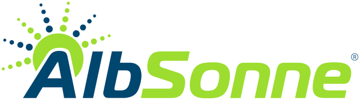

Lonsee · Holderring 5
Gewerbepark 3
Der Gewerbepark 3 entsteht als Erweiterung direkt neben dem Gewerbepark 1: eine Gewerbehalle mit sieben Hallentoren und ein zweigeschossiger Kopfbau mit Terrasse. Die Halle ist vermietet. Für den Kopfbau suchen wir noch einen Mieter aus der Gastronomie, zum Beispiel Bäckerei, Bistro, Imbiss oder Asia-Küche.
7Hallentore, 4,20 m hoch
Kopfbaunoch frei
Mieter

Gorisek GerüstbauGerüstverleih, Planung, Service

Albsonne GmbHGewerbepark 2 und 3

Zaunteam UlmZaunbau · Erdgeschoss
| Adresse | Holderring 5, 89173 Lonsee |
|---|---|
| Gebäude | Gewerbehalle mit zweigeschossigem Kopfbau |
| Höhen | Halle ca. 6,5 m, Kopfbau ca. 8,0 m, lichte Hallenhöhe 4,16 m |
| Planstand | Baueingabe vom 25.11.2025 |
| Status | Halle vermietet, Kopfbau frei |
Kopfbau noch frei für Gastronomie.
Kontakt →Sie planen eine Bäckerei, ein Bistro, einen Imbiss oder Asia-Küche? Melden Sie sich bei uns.